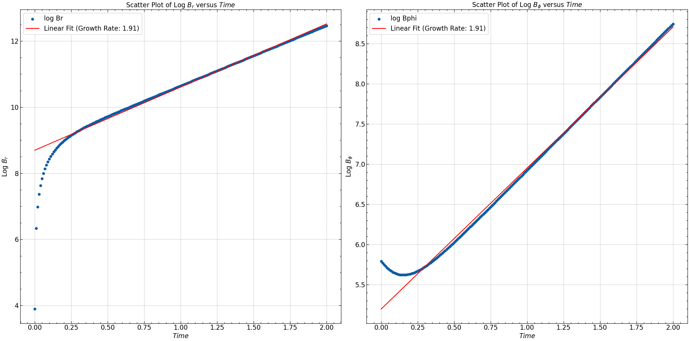
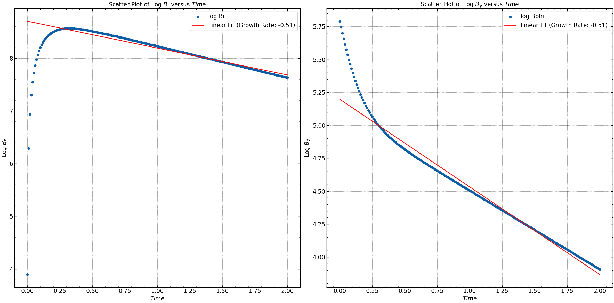

Task 2
Solve the mean-field \(\alpha-\Omega\) dynamo equations in the kinematic regime. That is, include the \(\Omega\) effect term in the equation for \(\dfrac{\partial \bar{B}_\phi}{\partial t}\) and the \(\alpha\) effect term in the equation for \(\dfrac{\partial \bar{B}_r}{\partial t}\). This requires specifying the overall magnitude and spatial dependence of \(\Omega\) and \(\alpha\).
Repeat the investigation you had done for task 1, with the new equations, for different values of the dynamo number, \(D\) $\( D = − \dfrac{\alpha_0 q \Omega h^3}{\eta_t^2} \)\( where \)q = − \dfrac{d \ln \Omega}{d \ln r}\( and \)\alpha_0 > 0\( is the amplitude of the \)\alpha\( effect. Note that \)q > 0\( if \)\Omega\( decreases with \)r\(, which is generally the case in galaxies, so \)D < 0$.
The exponential decay becomes exponential growth if \(|D| > |D_c|\), where \(D_c\) is the critical dynamo number. Find the critical dynamo number numerically (ideally, you would automate this feature).
Compare the growth rate you obtain for a given value of \(D\) (for \(|D| > |D_c|\)) with the no-z solution prediction for the local growth rate \(\gamma\). Do the same comparison for \(D_c\) . Do the results agree with your expectations?
\(\alpha \Omega\) Dynamo Simulation#
We begin by adopting the simplest approximation to the mean field dynamo equations, treating the system as a flat rotating thin disc. This assumption implies that the aspect ratio, denoted by \(\epsilon = \frac{h_o}{R_o}\), where \(h_o\) is the disc thickness and \(R_o\) is its radius, is much less than 1, allowing us to neglect all terms involving \(\epsilon^2\), along with any radial derivatives associated with it.
Under this approximation, we seek a local solution in the \(z\) direction for specific values of \(\phi\) and \(r\). Our mean field dynamo equation is given by:
where \(\mathcal{E} = \left( \alpha \bar{\mathbf{B}} \right) - \eta_t \left( \nabla \times \bar{\mathbf{B}} \right)\).
To simplify the equations further, we make the following approximations:
We consider the velocity field \(\bar{\mathbf{V}}\) to be of the form: $\( \mathbf{\bar{V}} = \bar{V}_r(r) \mathbf{\hat{r}} + r \Omega(r) \mathbf{\hat{\phi}} + \bar{V}_z(r, z) \mathbf{\hat{z}} \)\( Here, \)\bar{V}_r\(, \)\Omega\(, and \)\bar{V}_z$ represent the radial, azimuthal, and vertical components of the velocity field, respectively.
We take the turbulent magnetic diffusivity, \(\eta_T\), to be independent of \(\bar{\mathbf{B}}\). This simplifies our equation to: $\( \boxed{ \frac{\partial \bar{\mathbf{B}}}{\partial t} = \nabla \times \left( \bar{\mathbf{V}} \times \bar{\mathbf{B}} \right) + \nabla \times \left(\alpha \bar{\mathbf{B}} \right) - \eta_T \left( \nabla \times \nabla \times \bar{\mathbf{B}} \right) } \)$
Solving the equations in cylindrical coordinates and assuming azimuthal symmetry, we derive the equations for \(\bar{B}_r\) and \(\bar{B}_{\phi}\) as: $\( \frac{\partial \bar{B}_r}{\partial t} = V_r \frac{\partial \bar{B}_z}{\partial z} - \frac{\partial (V_z \bar{B}_r)}{\partial z} - \frac{\partial (\alpha \bar{B}_\phi)}{\partial z} + \eta_T \left[ \frac{\partial^2 \bar{B}_r}{\partial z^2} + \frac{\partial}{\partial r} \left( \frac{1}{r} \frac{\partial}{\partial r} \left( r \bar{B}_r \right) \right) \right] \)\( \)\( \frac{\partial \bar{B}_\phi}{\partial t} = r \Omega \frac{\partial \bar{B}_z}{\partial z} - \frac{\partial (V_z \bar{B}_\phi)}{\partial z} - \frac{\partial (V_r \bar{B}_\phi)}{\partial r} + \frac{\partial (r \Omega \bar{B}_r)}{\partial r} + \frac{\partial (\alpha \bar{B}_r)}{\partial z} - \frac{\partial (\alpha \bar{B}_z)}{\partial r} + \eta_T \left[ \frac{\partial^2 \bar{B}_\phi}{\partial z^2} + \frac{\partial}{\partial r} \left( \frac{1}{r} \frac{\partial}{\partial r} \left( r \bar{B}_\phi \right) \right) \right] \)$
Utilizing the \(\alpha-\Omega\) approximation and defining \(q = -\dfrac{\partial \ln \Omega}{\partial \ln r} = -\dfrac{r}{\Omega} \dfrac{\partial \Omega}{\partial r}\), we obtain the simplified equations: $\( \boxed{ \frac{\partial \bar{B}_r}{\partial t} = - \frac{\partial (\alpha \bar{B}_\phi)}{\partial z} + \eta_T \frac{\partial^2 \bar{B}_r}{\partial z^2} } \quad \text{and} \quad \boxed{ \frac{\partial \bar{B}_\phi}{\partial t} = DS \bar{B}_r + \eta_T \frac{\partial^2 \bar{B}_\phi}{\partial z^2} } \)$
Here, we have neglected all terms involving \(\dfrac{\partial}{\partial r}\) in \(\bar{B}\) and omitted the \(\alpha^2\) term for simplicity. The parameter \(S\) represents the shear rate and is defined as \(S = r \dfrac{\partial \Omega}{\partial r}\). For a flat rotation curve, \(S = -\Omega\), where \(\Omega_{0}\) and \(S_{0}\) are their values at \(r = R_o\). Additionally, the \(\alpha\)-coefficient has a functional dependence of \(\alpha \simeq l_{0}^{2} \Omega / h_{0}\).
Parameter Functional Dependence#
In our model, we express the shear rate (\(S\)) and the \(\alpha\) coefficient as functions of the galactic coordinates. Specifically:
The dynamo number (\(D\)) is then defined as:
Here, \(q\) denotes the derivative of the logarithm of \(\Omega\) with respect to the logarithm of \(r\). For a galaxy with a flat rotation curve (\(\Omega \propto \frac{1}{r}\)), \(q\) evaluates to 1. Therefore, the dynamo number can be expressed as:
Where:
\(h\) represents the thickness of the thin galactic disk,
\(\alpha\) is the coefficient responsible for converting toroidal magnetic fields into poloidal ones, and
\(\Omega\) denotes the rotation rate of the galaxy, inducing the twisting of poloidal fields into toroidal ones.
Example
Let’s consider the Milky Way Galaxy with \(r_{\omega} = 2\) kpc and \(\Omega_0 = 110\) km/s/kpc, resulting in \(q \approx 1\).
We compute \(\alpha\) as:
With \(\eta_T = 3.48 \times 10^{-2}\text{ (100 pc)}^2/\text{ Myr}\) and \(h = 100\) pc, the critical dynamo number is:
Here, \(\alpha\) is measured in km/s.
Setting up the Simulation#
For the purpose of simulation, we will essentially treat all the parameters as constants and obtain the local solution to the dynamo problem. We expect that for \(|D| > |D_c|\), i.e., the critical dynamo number, we will obtain exponentially increasing solutions. The key idea here is to find \(B_r\) and \(B_\phi\) for all times, and for the parameters where we first observe increasing solutions, we determine our critical dynamo number. Additionally, we identify the radial positions on the discs where this possibility occurs.
Boundary conditions#
We will use the same bound conditions as done in the task 1.
Results#
We have solved the dynamo equation in z with the original eigenmodes of diffusion equation as the initial condition. We have have generated \(B_r^o\) and \(B_\phi^o\).
Initial Condition#

We ran a routine to find the critical dynamo number \(D_c\) where \(D\) and other relevant parameters were varying with \(r\). And we found that at \( r = 1.508\), B values start increasing with time for all time indices.
Parameter |
Value |
|---|---|
\( l \) |
0.9999 |
\( a \) |
3.314 |
\( b \) |
0.7289 |
\( D_c \) |
-2.197 |
Thus, critical dynamo number for the above system came out to be \(D_c = 2.197\).
Simulation @ \(|D| \gt |D_c|\)#
Parameter values
Parameter |
Value |
|---|---|
\(\eta\) |
1 |
\(\alpha\) |
0.5714285714285714 |
\(\omega\) |
0.10219053791315619 |
\(Rw\) |
-5.007336357744653 |
\(Ra\) |
4.0 |
Dynamo number |
-20.029345430978612 |

Variation of \(B_r\), \(B_\phi\), \(B_\text{norm}\) and pitch angle \(\theta\) with time.

This plot shows that the log of magnetic field increases linearly implying exponential increase.
Simulation @ \(|D| \lt |D_c|\)#

Variation of \(B_r\), \(B_\phi\), \(B_\text{norm}\) and pitch angle \(\theta\) with time.

The plots demonstrates a magnetic field decay characterized by a slope or rate akin to the specified (de)growth rate.
For detailed analysis of the results check the simulation file here.